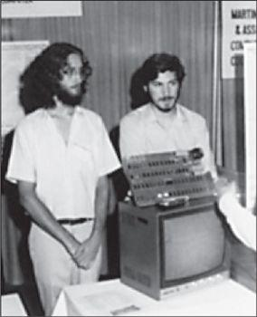

Daniel Kottke and Jobs with the Apple I at the Atlantic City computer fair, 1976
In San Francisco and the Santa Clara Valley during the late 1960s, various cultural currents flowed together. There was the technology revolution that began with the growth of military contractors and soon included electronics firms, microchip makers, video game designers, and computer companies. There was a hacker subculture—filled with wireheads, phreakers, cyberpunks, hobbyists, and just plain geeks—that included engineers who didn’t conform to the HP mold and their kids who weren’t attuned to the wavelengths of the subdivisions. There were quasi-academic groups doing studies on the effects of LSD; participants included Doug Engelbart of the Augmentation Research Center in Palo Alto, who later helped develop the computer mouse and graphical user interfaces, and Ken Kesey, who celebrated the drug with music-and-light shows featuring a house band that became the Grateful Dead. There was the hippie movement, born out of the Bay Area’s beat generation, and the rebellious political activists, born out of the Free Speech Movement at Berkeley. Overlaid on it all were various self-fulfillment movements pursuing paths to personal enlightenment: Zen and Hinduism, meditation and yoga, primal scream and sensory deprivation, Esalen and est.
20世纪60年代末，各种文化潮流在旧金山和硅谷交汇。技术革命伴随着军事承包商的发展而兴起，并迅速扩展到电子公司、微芯片制造商、视频游戏软件设计师和计算机公司。这里出现了黑客的亚文化群——云集于此的有资深玩家、电话飞客、电子朋克、业余爱好者以及纯粹的极客——包括那些不愿遵照惠普模式行事的工程师和他们不合群的孩子们。这里有准学术性的团体在研究迷幻药的效果，参与者包括来自帕洛奧图增强研究中心（AugmentationResearchCenter）的道格·恩格尔巴特（DougEngdbart），他后来参与发明了电脑鼠标以及图形用户界面；还有肯·凯西（KenKesey），他为了歌颂毒品举行了一场声光盛宴，请来了一支乐队表演，而这支乐队就是后来的“感恩而死”。在这里，湾区垮掉的一代发起了嬉皮士运动，伯克利的言论自由运动诞生了一批叛逆的政治活跃分子。在此基础上，一系列实现自我、追求心灵启迪的行为风靡一时——禅宗和印度教，冥想和瑜伽，原始尖叫和感觉剥夺，伊莎兰治疗法①和电击休克治疗法。
This fusion of flower power and processor power, enlightenment and technology, was embodied by Steve Jobs as he meditated in the mornings, audited physics classes at Stanford, worked nights at Atari, and dreamed of starting his own business. “There was just something going on here,” he said, looking back at the time and place. “The best music came from here—the Grateful Dead, Jefferson Airplane, Joan Baez, Janis Joplin—and so did the integrated circuit, and things like the Whole Earth Catalog.”
嬉皮士信仰与计算机力量的交融，思想与科技的结合，都在史蒂夫·乔布斯的身上得到了体现，他早晨冥想，然后去斯坦福旁听物理学课程，晚上在雅达利工作，并梦想着能创办自己的事业。“有些奇妙的事情正在这里上演”，回首彼时彼处，他说道，“最好的音乐来源于此——感恩而死、杰弗逊飞船乐队（JeffersonAirplane）、琼·贝兹（JoanBaez）、詹尼斯·乔普林（JanisJoplin），集成电路以及《全球概览》（TheWholeEarthCatalog）之类的事物也在这里诞生。”
Initially the technologists and the hippies did not interface well. Many in the counterculture saw computers as ominous and Orwellian, the province of the Pentagon and the power structure. In The Myth of the Machine, the historian Lewis Mumford warned that computers were sucking away our freedom and destroying “life-enhancing values.” An injunction on punch cards of the period—“Do not fold, spindle or mutilate”—became an ironic phrase of the antiwar Left.
起初，技术人员和嬉皮士们并没有多少交集。很多反主流文化的人认为电脑是不祥的，是奥威尔式的专制统治工具，应该为五角大楼和统治阶层所独有。在《机器神话》（TheMythoftheMachine）一书中，历史学家刘易斯·芒福德（LewisMumford）警告说，电脑正在一点一点吞嗤我们的自由，损害“有益人生的价值观”。那一时期穿孔卡片上的一条警告语——“请勿折叠、卷曲或损坏”——成为了左派反战人士的讽刺用语。
But by the early 1970s a shift was under way. “Computing went from being dismissed as a tool of bureaucratic control to being embraced as a symbol of individual expression and liberation,” John Markoff wrote in his study of the counterculture’s convergence with the computer industry, What the Dormouse Said. It was an ethos lyrically expressed in Richard Brautigan’s 1967 poem, “All Watched Over by Machines of Loving Grace,” and the cyberdelic fusion was certified when Timothy Leary declared that personal computers had become the new LSD and years later revised his famous mantra to proclaim, “Turn on, boot up, jack in.” The musician Bono, who later became a friend of Jobs, often discussed with him why those immersed in the rock-drugs-rebel counterculture of the Bay Area ended up helping to create the personal computer industry. “The people who invented the twenty-first century were pot-smoking, sandal-wearing hippies from the West Coast like Steve, because they saw differently,” he said. “The hierarchical systems of the East Coast, England, Germany, and Japan do not encourage this different thinking. The sixties produced an anarchic mind-set that is great for imagining a world not yet in existence.”
但到了20世纪70年代初期，人们的想法开始转变。“计算机从作为官僚机构的控制工具而被不屑一顾，变成了作为个人表达与自由解放的象征而被欣然接受。”约翰·马尔科夫（JohnMarkoff）在他研究反主流文化群体与计算机产业关系的书《睡鼠说了什么》（WhattheDormouseSaid）中这样写道。理查德·布劳提根（RichardBrautigan）在他1967年创作的诗《慈爱的机器照看一切》（AllWatchedOverByMachinesofLovingGrace）中就描绘过这样的场景，而当蒂莫西·利里宣称个人电脑已经成为了新的迷幻药，并将他那句著名言论②改写成“开机，启动，接入”（turnon,bootup,jackin）时，电脑致幻便得到了证实。后来成为乔布斯朋友的音乐人波诺当时经常与他讨论，为什么那些来自湾区的沉溺于摇滚乐和毒品的叛逆反主流文化分子，最终帮助创建了个人电脑产业。“那些开创了21世纪的人，都像史蒂夫一样，他们是来自西海岸、吸着大麻、穿着凉鞋的嬉皮士，他们会从不同的角度去看问题。”他说，“东海岸、英格兰、德国以及日本的等级制度不鼓励这种与众不同的思考方式。60年代孕育的这样一种无政府主义的思维模式，恰恰有助于人类对一个尚不存在的世界展开想象。”
One person who encouraged the denizens of the counterculture to make common cause with the hackers was Stewart Brand. A puckish visionary who generated fun and ideas over many decades, Brand was a participant in one of the early sixties LSD studies in Palo Alto. He joined with his fellow subject Ken Kesey to produce the acid-celebrating Trips Festival, appeared in the opening scene of Tom Wolfe’s The Electric Kool-Aid Acid Test, and worked with Doug Engelbart to create a seminal sound-and-light presentation of new technologies called the Mother of All Demos. “Most of our generation scorned computers as the embodiment of centralized control,” Brand later noted. “But a tiny contingent—later called hackers—embraced computers and set about transforming them into tools of liberation. That turned out to be the true royal road to the future.”
有一个人在推动反主流文化人群与黑客的联合中发挥了作用，他就是斯图尔特·布兰德（StewartBrand）。这个爱开玩笑的梦想家，在数十年间不断制造快乐和创意，参与了60年代初在帕洛奥图的迷幻药研究。他与一同接受试验的肯·凯西创办了赞美迷幻药的“旅行节”，他还出现在汤姆·伍尔夫（TomWolfe）的《令人振奋的兴奋剂实验》（TheElectricKool-AidAcidTest）的开头，他与道格·恩格尔巴特合作创造了利用声光演示新技术的方法，并称其为“演示之母”。“我们这一代的大多数人都将电脑看做集权控制的化身而蔑视它”，布兰德后来写道，“但有一小部分人——也就是后来被称做黑客的人——欣然接受了电脑并开始将它们转变成解放的工具。这一举动后来被证明是通向未来的正确道路。”
Brand ran the Whole Earth Truck Store, which began as a roving truck that sold useful tools and educational materials, and in 1968 he decided to extend its reach with the Whole Earth Catalog. On its first cover was the famous picture of Earth taken from space; its subtitle was “Access to Tools.” The underlying philosophy was that technology could be our friend. Brand wrote on the first page of the first edition, “A realm of intimate, personal power is developing—power of the individual to conduct his own education, find his own inspiration, shape his own environment, and share his adventure with whoever is interested. Tools that aid this process are sought and promoted by the Whole Earth Catalog.” Buckminster Fuller followed with a poem that began: “I see God in the instruments and mechanisms that work reliably.”
布兰德经营着一桩名为“全球卡车商店”（TheWholeEarthTruckStore）的生意，刚开始只是一辆四处游荡的卡车，出售各种很酷的工具和教育材料。1968年，为扩大影响范围，他创立了《全球概览》。创刊号的封面就是那张著名的从太空拍摄的地球照片，副标题是“通往工具之路”。潜在的含义是科技也能成为人类的朋友。布兰德在创刊号的第一页上写道：“一个关乎私密的个人力量的领域正在蓬勃发展——这样的力量可以让个人实现自己的教育，找到自己的灵感，塑造自己的环境，与任何感兴趣的人分享自己的经历。《全球概览》的宗旨就是寻找和推广可以协助这一发展进程的工具巴克敏斯特·富勒（BuckminsterFuller）紧随其后写了一首诗，开头是这样的：“我在那些可靠的工具和器械中看到了上帝……”
Jobs became a Whole Earth fan. He was particularly taken by the final issue, which came out in 1971, when he was still in high school, and he brought it with him to college and then to the All One Farm. “On the back cover of their final issue” Jobs recalled, “was a photograph of an early morning country road, the kind you might find yourself hitchhiking on if you were so adventurous. Beneath it were the words: ‘Stay Hungry. Stay Foolish.’” Brand sees Jobs as one of the purest embodiments of the cultural mix that the catalog sought to celebrate. “Steve is right at the nexus of the counterculture and technology,” he said. “He got the notion of tools for human use.”
乔布斯对《全球概览》着了迷。他尤其钟爱的是1971年的停刊号，当时他还在上髙中，之后他一直带着这期杂志，去了大学，去了团结农场。“在停刊号的封底上，有一幅清晨乡间小路的照片，就是那种如果你有冒险精神，会在搭便车旅行时看到的景象。照片下面有一行字：‘求知若饥，虚心若愚。’”布兰德将乔布斯视为该杂志致力于颂扬的那种混合文化的最完美的化身。“史蒂夫就处在反主流文化与科技的交汇处，”他说，“他看到了工具为人所用的本质。”
Brand’s catalog was published with the help of the Portola Institute, a foundation dedicated to the fledgling field of computer education. The foundation also helped launch the People’s Computer Company, which was not a company at all but a newsletter and organization with the motto “Computer power to the people.” There were occasional Wednesday-night potluck dinners, and two of the regulars, Gordon French and Fred Moore, decided to create a more formal club where news about personal electronics could be shared.
布兰德出版这份杂志得到了波托拉协会（PortolaInstitute）的帮助，这是一个致力于当时计算机教育这个新兴领域的基金会。该基金会也帮助成立了人民电脑公司（People-sComputerCompany），这并不是一家公司，而是一个出版通讯的组织，他们的口号是“向人民传输计算机的力量”。该组织偶尔会在周三的晚上举行聚餐，两名常客——戈登·弗伦奇（GordonFrench）和弗雷德·摩尔（FredMoore）——决定成立一家更正规的俱乐部，大家可以在这里分享个人电子设备的最新消息。
They were energized by the arrival of the January 1975 issue of Popular Mechanics, which had on its cover the first personal computer kit, the Altair. The Altair wasn’t much—just a $495 pile of parts that had to be soldered to a board that would then do little—but for hobbyists and hackers it heralded the dawn of a new era. Bill Gates and Paul Allen read the magazine and started working on a version of BASIC, an easy-to-use programming language, for the Altair. It also caught the attention of Jobs and Wozniak. And when an Altair kit arrived at the People’s Computer Company, it became the centerpiece for the first meeting of the club that French and Moore had decided to launch.
他们受到了《大众机械师》（PopularMechanics）杂志1975年1月刊的启发，这期杂志的封面照是第一台个人计算机——阿尔泰（Altair）。阿尔泰其实没什么——只是价值495美元的一堆零部件，还必须被焊接到一块电路板上才能执行非常少的任务，但对于业余爱好者和黑客们来说，它预示着一个新纪元的来临。比尔·盖茨和保罗·艾伦（PaulAllen）看了那一期杂志后，就开始研发用于阿尔泰的BASIC语言版本。乔布斯和沃兹尼亚克也被这期杂志深深吸引了。当阿尔泰的评测样机来到人民电脑公司的时候，它立刻成为了弗伦奇和摩尔决定成立的俱乐部的首次会议的中心议题——
注释：
①发源于加州著名的伊莎兰学院，通过按摩帮助个体重新寻回身心的自由和活力。
②这句话即前文的“Turnon,tunein,dropout”。
The group became known as the Homebrew Computer Club, and it encapsulated the Whole Earth fusion between the counterculture and technology. It would become to the personal computer era something akin to what the Turk’s Head coffeehouse was to the age of Dr. Johnson, a place where ideas were exchanged and disseminated. Moore wrote the flyer for the first meeting, held on March 5, 1975, in French’s Menlo Park garage: “Are you building your own computer? Terminal, TV, typewriter?” it asked. “If so, you might like to come to a gathering of people with like-minded interests.”
新成立的组织叫做家酿计算机俱乐部（TheHomebrewComputerClub），它如同《全球概览》一般，融合了反主流文化与科技。这个俱乐部之于个人电脑时代，就如同土耳其人咖啡馆（Turk-sHeadcoffee-house）之于约翰逊博士（Dr.Johnson）①那个时代，思想在其间得以交流和传播。会议于1975年3月5日，在弗伦奇位于门洛帕克的车库中举行，摩尔为此写了传单。“你想搭建自己的计算机吗？抑或是终端机，电视机，打印机？”传单上这么写着，“如果是的话，来参加与你志趣相投的人们的聚会吧！”
Allen Baum spotted the flyer on the HP bulletin board and called Wozniak, who agreed to go with him. “That night turned out to be one of the most important nights of my life,” Wozniak recalled. About thirty other people showed up, spilling out of French’s open garage door, and they took turns describing their interests. Wozniak, who later admitted to being extremely nervous, said he liked “video games, pay movies for hotels, scientific calculator design, and TV terminal design,” according to the minutes prepared by Moore. There was a demonstration of the new Altair, but more important to Wozniak was seeing the specification sheet for a microprocessor.
艾伦·鲍姆在惠普的公告栏上看到了这张传单，然后打电话告诉了沃兹尼亚克，沃兹同意跟他一起参加。“那天晚上是我一生中最重要的夜晚之一。”沃兹尼亚克回忆道。另外还有差不多30人出现在当晚的聚会上，弗伦奇的车库都被挤满了，大家轮流介绍自己的兴趣爱好。摩尔的会议记录显示，沃兹尼亚克——后来他承认自己当时极度紧张——说他喜欢“视频游戏、酒店里的收费电影、科学计算器设计以及电视机设计”。会上演示了阿尔泰计算机，但对于沃兹来说，更重要的是他见到了一枚微处理器的规格表。
As he thought about the microprocessor—a chip that had an entire central processing unit on it—he had an insight. He had been designing a terminal, with a keyboard and monitor, that would connect to a distant minicomputer. Using a microprocessor, he could put some of the capacity of the minicomputer inside the terminal itself, so it could become a small stand-alone computer on a desktop. It was an enduring idea: keyboard, screen, and computer all in one integrated personal package. “This whole vision of a personal computer just popped into my head,” he said. “That night, I started to sketch out on paper what would later become known as the Apple I.”
当他想到微处理器时——也就是带有一整块中央处理单元的芯片——他有了一个想法。他一直在设计一台终端机，带有键盘和显示器，可以连接到一台小型机上。利用一枚微处理器，他就可以将小型机的一部分性能转移到终端机上，这样终端机就可以变成一台独立的小型台式机。这个主意在他脑海中萦绕了很久：键盘、屏幕、计算机整合在一套个人装置中。“我脑子里就突然冒出来这个关于个人电脑的设想，”他说，“那天晚上，我开始设计后来成为AppleI计算机的草图。”
At first he planned to use the same microprocessor that was in the Altair, an Intel 8080. But each of those “cost almost more than my monthly rent,” so he looked for an alternative. He found one in the Motorola 6800, which a friend at HP was able to get for $40 apiece. Then he discovered a chip made by MOS Technologies that was electronically the same but cost only $20. It would make his machine affordable, but it would carry a long-term cost. Intel’s chips ended up becoming the industry standard, which would haunt Apple when its computers were incompatible with it.
起初他打算使用与阿尔泰上一样的微处理器，英特尔8080。但每一枚芯片“比我一个月的房租还贵”，所以他就开始寻找替代品。他找到了摩托罗拉6800，他有一个在惠普工作的朋友能以40美元一枚的价格搞到。之后他又找到了MOS科技公司（MOSTechnologies）制造的一款芯片，在电子特性上与摩托罗拉6800是一样的，但每枚只要20美元。这样一来他的机器的价格就会更低廉，让人买得起，但也为此付出了一个长期的代价——英特尔的芯片后来成为了行业标准，而苹果的电脑因为与之不兼容而饱受困扰。
After work each day, Wozniak would go home for a TV dinner and then return to HP to moonlight on his computer. He spread out the parts in his cubicle, figured out their placement, and soldered them onto his motherboard. Then he began writing the software that would get the microprocessor to display images on the screen. Because he could not afford to pay for computer time, he wrote the code by hand. After a couple of months he was ready to test it. “I typed a few keys on the keyboard and I was shocked! The letters were displayed on the screen.” It was Sunday, June 29, 1975, a milestone for the personal computer. “It was the first time in history,” Wozniak later said, “anyone had typed a character on a keyboard and seen it show up on their own computer’s screen right in front of them.”
Jobs was impressed. He peppered Wozniak with questions: Could the computer ever be networked? Was it possible to add a disk for memory storage? He also began to help Woz get components. Particularly important were the dynamic random-access memory chips. Jobs made a few calls and was able to score some from Intel for free. “Steve is just that sort of person,” said Wozniak. “I mean, he knew how to talk to a sales representative. I could never have done that. I’m too shy.”
乔布斯也大吃一惊。他连问了沃兹尼亚克好几个问题：这台电脑能联网吗？是否有可能添加一块磁盘作为存储器？他还开始帮沃兹尼亚克找来零件。最为重要的就是DRAM（动态随机存取存储芯片）。乔布斯打了几个电话，就免费从英特尔得到了一些芯片。“史蒂夫就是那样的人，”沃兹尼亚克说，“他知道怎么跟销售代表说话。我就不行，我太羞涩了。”
Jobs began to accompany Wozniak to Homebrew meetings, carrying the TV monitor and helping to set things up. The meetings now attracted more than one hundred enthusiasts and had been moved to the auditorium of the Stanford Linear Accelerator Center. Presiding with a pointer and a free-form manner was Lee Felsenstein, another embodiment of the merger between the world of computing and the counterculture. He was an engineering school dropout, a participant in the Free Speech Movement, and an antiwar activist. He had written for the alternative newspaper Berkeley Barb and then gone back to being a computer engineer.
乔布斯开始跟随沃兹尼亚克一起参加家酿计算机俱乐部的会议，他背着显示器帮忙组装。这个会议已经吸引了100多个狂热爱好者，会议地点也转移到了斯坦福线性加速器中心的大礼堂，之前乔布斯和沃兹也正是在这个中心找到了那本帮助他们制造蓝盒子的电话系统手册。会议由另一位反主流文化与计算机产业融合的代表人物李·费尔森施泰因（LeeFelsenstein）主持，他手拿指示器，态度随意自由。他是工程学院的辍学生，曾经参加过言论自由运动，也是一名反战分子。他也曾为地下报纸《伯克利芒刺报》（BerkeleyBarb）写过文章，之后又干回老本行，成为了一名电脑工程师。
Woz was usually too shy to talk in the meetings, but people would gather around his machine afterward, and he would proudly show off his progress. Moore had tried to instill in the Homebrew an ethos of swapping and sharing rather than commerce. “The theme of the club,” Woz said, “was ‘Give to help others.’” It was an expression of the hacker ethic that information should be free and all authority mistrusted. “I designed the Apple I because I wanted to give it away for free to other people,” said Wozniak.
每次会议开场，费尔森施泰因都会进行一个“映射”环节，发表一些简短的评论，然后由一名指定的爱好者进行正式的演示，最后是“随机存取”环节，大家随意走动，互相交流。沃兹由于太害羞，通常不会在会上发言，但大家在会议结束后会聚集在他的机器旁，他就会很自豪地演示他的进展。摩尔为这个俱乐部灌输的精神就是交换与分享，而不是做买卖。“这个俱乐部的主题，”沃兹说，“就是乐于奉献，帮助他人。”这是黑客伦理的一种体现：信息应该是免费的，也不能迷信权威。“我之所以设计AppleI，就是因为我想把它免费贡献给别人。”沃兹尼亚克说。
This was not an outlook that Bill Gates embraced. After he and Paul Allen had completed their BASIC interpreter for the Altair, Gates was appalled that members of the Homebrew were making copies of it and sharing it without paying him. So he wrote what would become a famous letter to the club: “As the majority of hobbyists must be aware, most of you steal your software. Is this fair? . . . One thing you do is prevent good software from being written. Who can afford to do professional work for nothing? . . . I would appreciate letters from anyone who wants to pay up.”
但比尔·盖茨不是这么想的。他和保罗·艾伦完成了阿尔泰电脑的BASIC语言编译器后，家酿计算机俱乐部的成员复制了该编译器并且在没有付费给他的情况下相互分享，这让盖茨很是没料到。于是他绘俱乐部写了那封著名的信：“请大多数业余爱好者们意识到，你们的软件都是偷来的。这公平吗？……你们这样做只会让别人不再愿意编写好的软件。谁能承受得起无偿进行专业的工作？……如果有谁愿意付钱的话，给我来信，我会很感激。”
Steve Jobs, similarly, did not embrace the notion that Wozniak’s creations, be it a Blue Box or a computer, wanted to be free. So he convinced Wozniak to stop giving away copies of his schematics. Most people didn’t have time to build it themselves anyway, Jobs argued. “Why don’t we build and sell printed circuit boards to them?” It was an example of their symbiosis. “Every time I’d design something great, Steve would find a way to make money for us,” said Wozniak. Wozniak admitted that he would have never thought of doing that on his own. “It never crossed my mind to sell computers. It was Steve who said, ‘Let’s hold them in the air and sell a few.’”
与盖茨类似，史蒂夫·乔布斯也不希望沃兹尼亚克的发明——不管是蓝盒子还是电脑——是免费的。所以他说服了沃兹，让他不要再免费送出他的设计原理图。反正大多数人也没时间来自己搭一台电脑，这是乔布斯的理由。“我们为什么不做好印刷电路板然后卖给他们呢？”这就是他们合作关系的一个写照。“每次我设计出一样很棒的东西，史蒂夫就会找到办法为我们赚到钱。”沃兹说。他承认，他自己绝不会有赚钱的想法。“我心里从没有想过要卖电脑，”沃兹回忆道，“是史蒂夫说的，我们把这些拿出来给大家看看，卖出去一些。”
Jobs worked out a plan to pay a guy he knew at Atari to draw the circuit boards and then print up fifty or so. That would cost about $1,000, plus the fee to the designer. They could sell them for $40 apiece and perhaps clear a profit of $700. Wozniak was dubious that they could sell them all. “I didn’t see how we would make our money back,” he recalled. He was already in trouble with his landlord for bouncing checks and now had to pay each month in cash.
乔布斯想到了一个计划，付钱给雅达利公司的一个熟人，让他帮忙绘制电路板，然后制作50张左右。这样的花费是1000美元上下，还要加上给设计者的酬劳。他们可以把每块电路板卖40美元，这样的话利润大概是700美元。沃兹不相信他们能把电路板都卖掉。“我甚至看不出怎么收回成本。”他回忆说。因为银行拒付他的支票，他已经惹恼了房东，现在每个月只能用现金付房租。
Jobs knew how to appeal to Wozniak. He didn’t argue that they were sure to make money, but instead that they would have a fun adventure. “Even if we lose our money, we’ll have a company,” said Jobs as they were driving in his Volkswagen bus. “For once in our lives, we’ll have a company.” This was enticing to Wozniak, even more than any prospect of getting rich. He recalled, “I was excited to think about us like that. To be two best friends starting a company. Wow. I knew right then that I’d do it. How could I not?”
乔布斯知道怎样说服沃兹。他没有争辩说他们一定能赚钱，而是说这一定会是一次有趣的经历。“即使我们赔了钱，我们也能拥有一家公司，”乔布斯说，当时他们正开着他的大众汽车转悠，“在我们的一生中，至少有这么一次，我们会拥有一家公司。”这句话对沃兹尼亚克的诱惑太大了，比变成富人的诱惑还要大。沃兹尼亚克回忆道：“想象一下那种情景我就兴奋，两个最要好的朋友创办一家公司！天哪！我立马就同意了，我怎么可能拒绝？”
In order to raise the money they needed, Wozniak sold his HP 65 calculator for $500, though the buyer ended up stiffing him for half of that. For his part, Jobs sold his Volkswagen bus for $1,500. But the person who bought it came to find him two weeks later and said the engine had broken down, and Jobs agreed to pay for half of the repairs. Despite these little setbacks, they now had, with their own small savings thrown in, about $1,300 in working capital, the design for a product, and a plan. They would start their own computer company.
为了筹集所需资金，沃兹尼亚克以500美元的价格卖掉了自己的惠普65计算器，但是最后买家只给了一半的钱。乔布斯则把自己的大众汽车卖了1500美元。当初他父亲就反对他买这辆车，乔布斯也必须承认父亲是对的。事实证明那辆车的确让人头疼。实际上，买下这辆车的人两个星期之后就回来找乔布斯，说引擎坏掉了。乔布斯同意支付维修费用的一半。虽然有这些小挫折，但在把各自微薄的积蓄投入之后，他们现在已经拥有了1300美元的运营资本，还有产品设计以及一个计划。他们就要建立自己的电脑公司了——
注释：
①英国著名作家塞缪尔·约翰逊，他和多位友人定期会在土耳其人咖啡馆聚会。
Now that they had decided to start a business, they needed a name. Jobs had gone for another visit to the All One Farm, where he had been pruning the Gravenstein apple trees, and Wozniak picked him up at the airport. On the ride down to Los Altos, they bandied around options. They considered some typical tech words, such as Matrix, and some neologisms, such as Executek, and some straightforward boring names, like Personal Computers Inc. The deadline for deciding was the next day, when Jobs wanted to start filing the papers. Finally Jobs proposed Apple Computer. “I was on one of my fruitarian diets,” he explained. “I had just come back from the apple farm. It sounded fun, spirited, and not intimidating. Apple took the edge off the word ‘computer.’ Plus, it would get us ahead of Atari in the phone book.” He told Wozniak that if a better name did not hit them by the next afternoon, they would just stick with Apple. And they did.
既然决定开公司了，就要给公司起个名字。乔布斯之前又去了一次团结农场，在那里给格拉文施泰因苹果树剪了枝，沃兹去机场接他。在回洛斯阿尔托斯的路上，两人讨论了好几个名字。他们考虑过一些典型的技术词汇，比如“矩阵”（Matrix）；或者自己创一个新词，像“Executek”，融合了“执行”与“科技”；又或者干脆用个直白又无趣的名字，比方说“个人电脑股份有限公司”（PersonalComputerInc.）。决定名字的截止日期是第二天，因为乔布斯准备递交申请文件了。最后，乔布斯提议叫“苹果电脑公司”①。“我那段时间正在吃水果餐，”他解释说，“我刚刚从一个苹果农场回来。这名字听上去有意思，有活力，不吓人。‘苹果’削弱了‘电脑’这个词的锐气。还有，这能让我们在电话簿上排在雅达利之前。”他告诉沃兹，如果到第二天下午还想不到更好的名字，那就用“苹果”。他们真的用了。
Apple. It was a smart choice. The word instantly signaled friendliness and simplicity. It managed to be both slightly off-beat and as normal as a slice of pie. There was a whiff of counterculture, back-to-nature earthiness to it, yet nothing could be more American. And the two words together—Apple Computer—provided an amusing disjuncture. “It doesn’t quite make sense,” said Mike Markkula, who soon thereafter became the first chairman of the new company. “So it forces your brain to dwell on it. Apple and computers, that doesn’t go together! So it helped us grow brand awareness.”
“苹果”——这是个明智的选择。这个词立刻释放出友好而简洁的信号。这个名字既有一点儿标新立异，又不会让人觉得古怪。名字里带有一点点反主流文化、返璞归真的气息，又十分美国化。这两个词放在一起——苹果电脑——制造了一种有趣的分裂感。“这个名字有点儿无厘头，”迈克·马库拉（MikeMarkkula）说，他后来成了这家新公司的第一任董事长，“它会让你仔细回味。苹果和电脑，这两者根本扯不上关系啊！如此一来，就增加了我们的品牌知名度。”
Wozniak was not yet ready to commit full-time. He was an HP company man at heart, or so he thought, and he wanted to keep his day job there. Jobs realized he needed an ally to help corral Wozniak and adjudicate if there was a disagreement. So he enlisted his friend Ron Wayne, the middle-aged engineer at Atari who had once started a slot machine company.
沃兹尼亚克还没有准备好全身心加入苹果。他骨子里还是个惠普的人，至少他是这么想的，他还想保留自己在那儿的工作。乔布斯意识到，自己需要一个盟友，一来是要帮助说服沃兹，二来是在自己和沃兹有意见分歧的时候打破僵局。所以他请来了朋友罗恩·韦恩，雅达利那个曾经开过老虎机公司的中年工程师。
Wayne knew that it would not be easy to make Wozniak quit HP, nor was it necessary right away. Instead the key was to convince him that his computer designs would be owned by the Apple partnership. “Woz had a parental attitude toward the circuits he developed, and he wanted to be able to use them in other applications or let HP use them,” Wayne said. “Jobs and I realized that these circuits would be the core of Apple. We spent two hours in a roundtable discussion at my apartment, and I was able to get Woz to accept this.” His argument was that a great engineer would be remembered only if he teamed with a great marketer, and this required him to commit his designs to the partnership. Jobs was so impressed and grateful that he offered Wayne a 10% stake in the new partnership, turning him into a tie-breaker if Jobs and Wozniak disagreed over an issue.
韦恩知道，要让沃兹尼亚克离开惠普很困难，当下也没有必要让他离开那儿。当前的关键问题是说服他将他的电脑设计归为苹果公司所有。“沃兹对自己设计的电路有一种家长情结，他希望这些电路能有其他应用，或者让惠普也可以使用，”韦恩说，“乔布斯和我意识到，这些电路将会是苹果公司的核心。我们在我的公寓里讨论了两个小时，终于让沃兹接受了这个条件。”他的理由是，一个伟大的工程师，只有和一个伟大的营销人员合作，才有可能被世人所铭记，这就要求沃兹的设计全部专属于这家新公司。乔布斯很髙兴，也很感激，因此他将新公司10%的股份赠与了韦恩，让他成为了苹果公司的皮特·贝斯特（PeteBest）。更为关键的是，当乔布斯和沃兹在某个问题上有分歧时，韦恩可以决定最后的结果。
“They were very different, but they made a powerful team,” said Wayne. Jobs at times seemed to be driven by demons, while Woz seemed a na?f who was toyed with by angels. Jobs had a bravado that helped him get things done, occasionally by manipulating people. He could be charismatic, even mesmerizing, but also cold and brutal. Wozniak, in contrast, was shy and socially awkward, which made him seem childishly sweet. “Woz is very bright in some areas, but he’s almost like a savant, since he was so stunted when it came to dealing with people he didn’t know,” said Jobs. “We were a good pair.” It helped that Jobs was awed by Wozniak’s engineering wizardry, and Wozniak was awed by Jobs’s business drive. “I never wanted to deal with people and step on toes, but Steve could call up people he didn’t know and make them do things,” Wozniak recalled. “He could be rough on people he didn’t think were smart, but he never treated me rudely, even in later years when maybe I couldn’t answer a question as well as he wanted.”
“他们两个很不同，却组成了一支强大的队伍。”韦恩说。乔布斯有时候像恶魔附身一样，而沃兹则像个被天使控制着的孩子。乔布斯有虚张声势的本事，这让他可以做成事情，虽然有时候要利用别人。他有时候极富魅力，能让你着迷，但他也可以冷酷、残忍。而沃兹尼亚克却很害羞，有点儿社交障碍，这让他显得如同孩子一般可爱。“沃兹在某些方面十分聪明，但他就像个天才白痴一样，跟不认识的人打交道的时候就会手足无措。”乔布斯说，“我们是最佳拍档。”乔布斯敬畏沃兹在技术设计方面的才华，沃兹则佩服乔布斯的商业能力，这样相得益彰。“我从来都不愿意跟别人打交道，也不想触怒别人，但史蒂夫就有这个本事,给陌生人打电话还能让人家帮他做事，”沃兹尼亚克说，“他对他认为不聪明的人会很粗暴，但他从没有粗鲁地对待过我，即使到了后来，有些问题我给不出一个让他满意的答案。”
Even after Wozniak became convinced that his new computer design should become the property of the Apple partnership, he felt that he had to offer it first to HP, since he was working there. “I believed it was my duty to tell HP about what I had designed while working for them. That was the right thing and the ethical thing.” So he demonstrated it to his managers in the spring of 1976. The senior executive at the meeting was impressed, and seemed torn, but he finally said it was not something that HP could develop. It was a hobbyist product, at least for now, and didn’t fit into the company’s high-quality market segments. “I was disappointed,” Wozniak recalled, “but now I was free to enter into the Apple partnership.”
在沃兹尼亚克同意让他的新电脑设计成为苹果公司的财产之后，他还是觉得这些设计应该首先提供给惠普，因为那是他工作的地方。“我觉得，在我还任职于惠普的情况下，把我作出的设计告知他们是我的责任，”沃兹尼亚克说，“这是正确的，也是符合伦理标准的。”于是在1976年的春天，他向老板以及高级经理们展示了自己的成果。会上的髙级主管对这个设计印象颇佳——也有些难以取舍——但最后他还是说这不是惠普所能开发的。至少就现阶段而言，它还只是业余爱好者的玩具，无法融入公司的高品质细分市场。“我很失望，”沃兹回忆道，“但这也意味着我可以自由地投入到苹果公司的合作关系中去了。”
On April 1, 1976, Jobs and Wozniak went to Wayne’s apartment in Mountain View to draw up the partnership agreement. Wayne said he had some experience “writing in legalese,” so he composed the three-page document himself. His “legalese” got the better of him. Paragraphs began with various flourishes: “Be it noted herewith . . . Be it further noted herewith . . . Now the refore [sic], in consideration of the respective assignments of interests . . .” But the division of shares and profits was clear—45%-45%-10%—and it was stipulated that any expenditures of more than $100 would require agreement of at least two of the partners. Also, the responsibilities were spelled out. “Wozniak shall assume both general and major responsibility for the conduct of Electrical Engineering; Jobs shall assume general responsibility for Electrical Engineering and Marketing, and Wayne shall assume major responsibility for Mechanical Engineering and Documentation.” Jobs signed in lowercase script, Wozniak in careful cursive, and Wayne in an illegible squiggle.
1976年4月1日，乔布斯和沃兹去韦恩在山景城的公寓起草合作协议。韦恩说他有“用法律术语书写文件”的经验，所以这份三页纸的协议是由他完成的。他的“法律术语”确实运用得很好，各个段落都是以这样华丽的辞藻开头的：“在此注意……在此进一步注意……据此，考虑到各方利益分配……”但对于股权和利润的分配是简单明了的——45%—45%—10%——协议中还规定，任何超过100美元的支出，都需要得到至少两名合伙人的同意。此外，各方的责任也都划分明确。“沃兹尼亚克主要负责电子工程的执行；乔布斯负责电子工程和市场营销；韦恩负责机械工程以及文书工作。”乔布斯用小写字母签上了自己的名字，沃兹小心翼翼签上了草体字，韦恩的签名是难以辨认的潦草字体。
Wayne then got cold feet. As Jobs started planning to borrow and spend more money, he recalled the failure of his own company. He didn’t want to go through that again. Jobs and Wozniak had no personal assets, but Wayne (who worried about a global financial Armageddon) kept gold coins hidden in his mattress. Because they had structured Apple as a simple partnership rather than a corporation, the partners would be personally liable for the debts, and Wayne was afraid potential creditors would go after him. So he returned to the Santa Clara County office just eleven days later with a “statement of withdrawal” and an amendment to the partnership agreement. “By virtue of a re-assessment of understandings by and between all parties,” it began, “Wayne shall hereinafter cease to function in the status of ‘Partner.’” It noted that in payment for his 10% of the company, he received $800, and shortly afterward $1,500 more.
之后韦恩就退缩了。乔布斯开始计划借入并花掉更多的钱，韦恩便想起了以前自己公司失败的教训，他不想再经历一次那样的过程。乔布斯和沃兹都没有个人资产，但韦恩在他的床垫里藏了金币（他担心世界经济崩溃）。因为构成苹果公司的是非常简单的合伙人关系，而不是公司体系，所以合伙人个人需要对债务负责任，因此韦恩担心潜在的债权人会向自己追债。所以11天之后，他就回到了圣克拉拉的办公室里，带着一份“退出声明”和一份合作协议修正案。“经过协议各方的重新评估，”修正案开头说，“韦恩将不再以‘合伙人’身份参与公司运作。”文件中提到，作为对他持有的10%公司股份的回购，他得到了800美元，此后不久又得到了1500美元。
Had he stayed on and kept his 10% stake, at the end of 2010 it would have been worth approximately $2.6 billion. Instead he was then living alone in a small home in Pahrump, Nevada, where he played the penny slot machines and lived off his social security check. He later claimed he had no regrets. “I made the best decision for me at the time. Both of them were real whirlwinds, and I knew my stomach and it wasn’t ready for such a ride.”
如果当初他留在了苹果公司并继续持有这10%的股份，那么到2010年底这些股票的价值是大约26亿美元。然而，现在他住在内华达州帕朗市的一座小房子里，玩玩老虎机，靠社会保险金度日。他宣称自己毫不后悔。“我作了当时对我最有利的选择，”他说，“他们两个都是疯狂的家伙，我知道自己的承受能力，我不准备冒那样的险。”
Jobs and Wozniak took the stage together for a presentation to the Homebrew Computer Club shortly after they signed Apple into existence. Wozniak held up one of their newly produced circuit boards and described the microprocessor, the eight kilobytes of memory, and the version of BASIC he had written. He also emphasized what he called the main thing: “a human-typable keyboard instead of a stupid, cryptic front panel with a bunch of lights and switches.” Then it was Jobs’s turn. He pointed out that the Apple, unlike the Altair, had all the essential components built in. Then he challenged them with a question: How much would people be willing to pay for such a wonderful machine? He was trying to get them to see the amazing value of the Apple. It was a rhetorical flourish he would use at product presentations over the ensuing decades.
苹果公司正式成立之后不久，乔布斯和沃兹尼亚克就共同登台，在家酿计算机俱乐部进行了一次演示。沃兹展示了他们最新生产出来的一块电路板，描述了上面使用的微处理器、8Kb的内存，以及他编写的BISIC语言的程序版本。他还强调了“关键部件”是人性化的键盘，而不再是笨重的、让人困惑的由大堆灯泡和开关组成的面板。然后轮到乔布斯讲话。他指出苹果的产品与阿尔泰不同，所有的关键元部件都已经内置在机器中了。然后他问了大家一个问题：人们愿意花多少钱来购买这么一台完美的机器？他是在努力让大家看到苹果电脑的惊人价值。这是他在后来几十年的产品发布会上一直沿用的华丽辞藻。
The audience was not very impressed. The Apple had a cut-rate microprocessor, not the Intel 8080. But one important person stayed behind to hear more. His name was Paul Terrell, and in 1975 he had opened a computer store, which he dubbed the Byte Shop, on Camino Real in Menlo Park. Now, a year later, he had three stores and visions of building a national chain. Jobs was thrilled to give him a private demo. “Take a look at this,” he said. “You’re going to like what you see.” Terrell was impressed enough to hand Jobs and Woz his card. “Keep in touch,” he said.
然而观众并不是很感兴趣。苹果电脑使用的是二流的微处理器，而不是英特尔8080。但是有一个重要人物留了下来，想要获得更多信息。他的名字叫保罗·特雷尔（PaulTerrell）,1975年他开了一家电脑商店ByteShop，就在门洛帕克的国王大道上。而一年之后的现在，他已经有了三家店，并且计划将其发展为全国连锁。乔布斯非常兴奋能给他私下作演示。“看看吧，”他说，“你会喜欢上你看到的东西。”特雷尔看后印象深刻，把自己的名片给了乔布斯和沃兹。他说：“保持联系。”
“I’m keeping in touch,” Jobs announced the next day when he walked barefoot into the Byte Shop. He made the sale. Terrell agreed to order fifty computers. But there was a condition: He didn’t want just $50 printed circuit boards, for which customers would then have to buy all the chips and do the assembly. That might appeal to a few hard-core hobbyists, but not to most customers. Instead he wanted the boards to be fully assembled. For that he was willing to pay about $500 apiece, cash on delivery.
“我来跟你联系了。”第二天，乔布斯说着这句话赤脚走进了ByteShop。他做成了买卖。特雷尔同意订购50台电脑。但是有一个条件。特雷尔并不想要只值50美元的印刷电路板，因为顾客买了这个之后还要再去买芯片然后自己组装。这也许能吸引一些狂热的爱好者，但大多数顾客不愿意这么麻烦。他要的是完全组装好的产品。为此他愿意每台出价500美元，货到付款，现金结账。
Jobs immediately called Wozniak at HP. “Are you sitting down?” he asked. Wozniak said he wasn’t. Jobs nevertheless proceeded to give him the news. “I was shocked, just completely shocked,” Wozniak recalled. “I will never forget that moment.”
乔布斯立刻给还在惠普的沃兹打了电话。“你现在坐着吗？他问。沃兹回答说没有。不管怎样乔布斯还是把消息告诉了他。“我被震住了,完全雳住了，”沃兹尼亚克回忆说，“我永远都忘不了那一刻。”
To fill the order, they needed about $15,000 worth of parts. Allen Baum, the third prankster from Homestead High, and his father agreed to loan them $5,000. Jobs tried to borrow more from a bank in Los Altos, but the manager looked at him and, not surprisingly, declined. He went to Haltek Supply and offered an equity stake in Apple in return for the parts, but the owner decided they were “a couple of young, scruffy-looking guys,” and declined. Alcorn at Atari would sell them chips only if they paid cash up front. Finally, Jobs was able to convince the manager of Cramer Electronics to call Paul Terrell to confirm that he had really committed to a $25,000 order. Terrell was at a conference when he heard over a loudspeaker that he had an emergency call (Jobs had been persistent). The Cramer manager told him that two scruffy kids had just walked in waving an order from the Byte Shop. Was it real? Terrell confirmed that it was, and the store agreed to front Jobs the parts on thirty-day credit.
为了完成订单，他们需要价值15000美元的零部件。在家园高中和他们一起搞恶作剧的艾伦·鲍姆以及他的父亲，愿意借给他们5000美元。乔布斯想从洛斯阿尔托斯的一家银行借一些钱，但银行经理看了看他，不出所料，拒绝了。他去了哈尔泰克商店，提出拿苹果公司的股杈换取一些零部件，但商店老板认为他们只是“两个年轻的邋遢小子”，也柜绝了。雅达利的奥尔康愿意卖给他们芯片，但必须预付现金。最终，乔布斯说服克拉默电子公司（CramerElectronics）的经理亲自打电话给保罗·特雷尔，确认对方是否真的下了一个25000美元的订单。当时特雷尔正在开会，他听到喇《八里在叫他，说有紧急来电（乔布斯不停地打电话）。克拉默公司的经理对他说，两个衣着邋遢的小子走进自己的店里，挥舞着一张ByteShop的订单。订单是真的吗？特雷尔确认了订单的真实性，克拉默商店同意将零件预支给他们，账期30天——
注释：
①苹果公司当时名为AppleComputer,之后公司名称中去掉了Computer。
The Jobs house in Los Altos became the assembly point for the fifty Apple I boards that had to be delivered to the Byte Shop within thirty days, when the payment for the parts would come due. All available hands were enlisted: Jobs and Wozniak, plus Daniel Kottke, his ex-girlfriend Elizabeth Holmes (who had broken away from the cult she’d joined), and Jobs’s pregnant sister, Patty. Her vacated bedroom as well as the kitchen table and garage were commandeered as work space. Holmes, who had taken jewelry classes, was given the task of soldering chips. “Most I did well, but I got flux on a few of them,” she recalled. This didn’t please Jobs. “We don’t have a chip to spare,” he railed, correctly. He shifted her to bookkeeping and paperwork at the kitchen table, and he did the soldering himself. When they completed a board, they would hand it off to Wozniak. “I would plug each assembled board into the TV and keyboard to test it to see if it worked,” he said. “If it did, I put it in a box. If it didn’t, I’d figure what pin hadn’t gotten into the socket right.”
乔布斯一家位于洛斯阿尔托斯的房子，成为了这50块AppleI主板的组装工厂。主板必须在30天内送到ByteShop，因为零件的付款期限就是30天。所有人都加入了——乔布斯和沃兹，还有丹尼尔·科特基和他的前女友伊丽莎白·霍姆斯（她已经脱离了之前加入的邪教组织），以及乔布斯怀孕了的妹妹帕蒂。帕蒂空出来的卧室，以及厨房的桌子，还有车库都变成了工作地点。霍姆斯曾经上过珠宝课程，所以她被安排焊接芯片。“大多数我都做得不错，可是有几个被我滴上了助焊剂。”她说。这让乔布斯很不高兴，他埋怨道：“我们可没有多余的芯片。”事实的确如此。他把霍姆斯调到了厨房桌子上去负责记账和文书工作，他自己负责焊接。他们做完一块电路板后，就交到沃兹尼亚克手中。“我会把装好的主板连接上电视机和键盘进行测试，看看能不能工作，”他说，“如果能工作了，我就把它装进盒子里，如果不能的话，我还要找出哪只管脚没插好。”
Paul Jobs suspended his sideline of repairing old cars so that the Apple team could have the whole garage. He put in a long old workbench, hung a schematic of the computer on the new plasterboard wall he built, and set up rows of labeled drawers for the components. He also built a burn box bathed in heat lamps so the computer boards could be tested by running overnight at high temperatures. When there was the occasional eruption of temper, an occurrence not uncommon around his son, Paul would impart some of his calm. “What’s the matter?” he would say. “You got a feather up your ass?” In return he occasionally asked to borrow back the TV set so he could watch the end of a football game. During some of these breaks, Jobs and Kottke would go outside and play guitar on the lawn.
保罗·乔布斯也停下了自己修理汽车的副业，这样一来苹果公司的一帮人就能占用整个车库了。他在车库里放了一张长长的旧工作台，在他刚弄好的石膏板墙上挂了一张电脑示意图，还装了一排贴好标签的抽屉用来放零件。他还用好几台加热灯搭了一个高温箱，这样就可以测试主板在高温下连夜运转的状态。每当他的儿子脾气爆发的时候（这是很常见的现象），保罗·乔布斯就会把自己的冷静传输给他一些。“怎么啦？”他会说，“火烧屁股了？”作为交换，他偶尔会把电视机借走，因为这是家中唯一的一台，他要看橄榄球比赛的终场。这时候，乔布斯和科特基就会到外面的草坪上弹吉他。
Clara Jobs didn’t mind losing most of her house to piles of parts and houseguests, but she was frustrated by her son’s increasingly quirky diets. “She would roll her eyes at his latest eating obsessions,” recalled Holmes. “She just wanted him to be healthy, and he would be making weird pronouncements like, ‘I’m a fruitarian and I will only eat leaves picked by virgins in the moonlight.’”
乔布斯的母亲并不介意自己的家被一大堆零件和客人占领，但是儿子越来越怪异的饮食习惯让她很受挫。乔布斯的饮食强迫症总是招来她的白眼，”霍姆斯回忆说，“她只想要儿子健康，而乔布斯却会发表一些奇怪的宣言，比如：‘我是个果食主义者，我只吃由处女在月光下采摘的叶子。’”
After a dozen assembled boards had been approved by Wozniak, Jobs drove them over to the Byte Shop. Terrell was a bit taken aback. There was no power supply, case, monitor, or keyboard. He had expected something more finished. But Jobs stared him down, and he agreed to take delivery and pay.
12块组装好的主板经过沃兹尼亚克检验合格后，被乔布斯送到了ByteShop。特雷尔有点儿吃惊。没有电源，没有外壳，没有显示器也没有键盘。他期待的可不是这样的产品。但乔布斯死死盯着他，他只好同意收货付钱。
After thirty days Apple was on the verge of being profitable. “We were able to build the boards more cheaply than we thought, because I got a good deal on parts,” Jobs recalled. “So the fifty we sold to the Byte Shop almost paid for all the material we needed to make a hundred boards.” Now they could make a real profit by selling the remaining fifty to their friends and Homebrew compatriots.
30天之后，苹果公司已经接近赢利状态了。“这些主板的实际造价比我们预想的要低，因为零件我买得很划算，”乔布斯回忆道，“所以我们卖给ByteShop50块主板收回的钱，足够支付100块主板的材料费。”通过把剩下的50块卖给朋友和家酿计算机俱乐部的同仁，他们可以真正实现赢利了。
Elizabeth Holmes officially became the part-time bookkeeper at $4 an hour, driving down from San Francisco once a week and figuring out how to port Jobs’s checkbook into a ledger. In order to make Apple seem like a real company, Jobs hired an answering service, which would relay messages to his mother. Ron Wayne drew a logo, using the ornate line-drawing style of Victorian illustrated fiction, that featured Newton sitting under a tree framed by a quote from Wordsworth: “A mind forever voyaging through strange seas of thought, alone.” It was a rather odd motto, one that fit Wayne’s self-image more than Apple Computer. Perhaps a better Wordsworth line would have been the poet’s description of those involved in the start of the French Revolution: “Bliss was it in that dawn to be alive / But to be young was very heaven!” As Wozniak later exulted, “We were participating in the biggest revolution that had ever happened, I thought. I was so happy to be a part of it.”
伊丽莎白·霍姆斯正式成为了苹果的兼职记账员，时薪4美元，她每周从旧金山回来一次，想办法把乔布斯支票簿上的数目移入总账。为了看上去像一家正规公司，乔布斯租用了接听电话服务，所有的留言都会被转给他母亲。罗恩·韦恩为公司设计了商标，他使用维多利亚时代插图小说风格的华丽线描，画的是牛顿坐在一棵树下，边框上还引用了华兹华斯的一句诗：“一个灵魂，永远孤独地航行在陌生的思想海洋中。”这是略显古怪的一句格言，其实更加符合罗恩·韦恩的自身形象，而不是苹果公司。也许更加贴切的诗句来自华兹华斯对法国大革命的发起者的描述：“能活在黎明时光是何等幸福/但在那时是个青年更胜似天堂!（Blisswasitinthatdawntobealive/Buttobeyoungwasveryheaven!）”正如后来沃兹欣喜谈到的：“我想我们参与了历史上最伟大的革命，我很髙兴自己是其中的一分子。”
Woz had already begun thinking about the next version of the machine, so they started calling their current model the Apple I. Jobs and Woz would drive up and down Camino Real trying to get the electronics stores to sell it. In addition to the fifty sold by the Byte Shop and almost fifty sold to friends, they were building another hundred for retail outlets. Not surprisingly, they had contradictory impulses: Wozniak wanted to sell them for about what it cost to build them, but Jobs wanted to make a serious profit. Jobs prevailed. He picked a retail price that was about three times what it cost to build the boards and a 33% markup over the $500 wholesale price that Terrell and other stores paid. The result was $666.66. “I was always into repeating digits,” Wozniak said. “The phone number for my dial-a-joke service was 255-6666.” Neither of them knew that in the Book of Revelation 666 symbolized the “number of the beast,” but they soon were faced with complaints, especially after 666 was featured in that year’s hit movie, The Omen. (In 2010 one of the original Apple I computers was sold at auction by Christie’s for $213,000.)
沃兹已经开始思考下一代机器了，所以他们把当时的机型称为AppleI（苹果I型）。乔布斯和沃兹不停地奔走于国王大道，希望电子商店能够出售自己的电脑。除了卖给ByteShop的50台以及卖给朋友的50台，他们又开始生产100台供给零售商店。果然，他们两人之间又有了矛盾：沃兹想以成本价出售，而乔布斯想好好赚一笔。乔布斯赢了。他设定了一个零售价，差不多是成本的3倍，在特雷尔和其他商店支付的500美元批发价的基础上又上涨了33%，也就是666.66美元。“我一直都很喜欢重复的数字，”沃兹尼亚克说，“我的‘打电话听笑话’服务的号码是255-6666。”他们两个都不知道的是，666是《圣经·启示录》中“恶魔的数字”。不过很快他们就遭到了抗议，特别是在当年大热的电影《凶兆》重点突出了数字666之后。（2010年，一台原版AppleI在佳士得的一场拍卖中以213000美元售出。）
The first feature story on the new machine appeared in the July 1976 issue of Interface, a now-defunct hobbyist magazine. Jobs and friends were still making them by hand in his house, but the article referred to him as the director of marketing and “a former private consultant to Atari.” It made Apple sound like a real company. “Steve communicates with many of the computer clubs to keep his finger on the heartbeat of this young industry,” the article reported, and it quoted him explaining, “If we can rap about their needs, feelings and motivations, we can respond appropriately by giving them what they want.”
这台新机器的第一次专题报道出现在1976年7月的《界面》（Interface）杂志上，这是一本面向业余爱好者的杂志，现在已经停刊。乔布斯和朋友们还在家中动手组装机器，但报道文章中已经称他为“市场总监”和“前雅达利的私人顾问”了。这让苹果听上去像个真正的公司。“史蒂夫与许多电脑俱乐部进行交流，以掌握这一新兴产业的脉搏，”报道中称，并且还引用了乔布斯的解释，“如果我们可以了解他们的需求、感受和动机，我们就可以作出正确的回应，生产出他们所需要的产品。”
By this time they had other competitors, in addition to the Altair, most notably the IMSAI 8080 and Processor Technology Corporation’s SOL-20. The latter was designed by Lee Felsenstein and Gordon French of the Homebrew Computer Club. They all had the chance to go on display during Labor Day weekend of 1976, at the first annual Personal Computer Festival, held in a tired hotel on the decaying boardwalk of Atlantic City, New Jersey. Jobs and Wozniak took a TWA flight to Philadelphia, cradling one cigar box with the Apple I and another with the prototype for the successor that Woz was working on. Sitting in the row behind them was Felsenstein, who looked at the Apple I and pronounced it “thoroughly unimpressive.” Wozniak was unnerved by the conversation in the row behind him. “We could hear them talking in advanced business talk,” he recalled, “using businesslike acronyms we’d never heard before.”
那个时候，他们已经有了阿尔泰之外的竞争者，其中最著名的是IMSAI8080和处理器科技公司（ProcessorTechnologyCorporation）的SOL-20。后者是由家酿计算机俱乐部的李·费尔森施泰因和戈登·弗伦奇设计的。1976年的劳工节周末，第一届年度个人电脑节在新泽西州的大西洋城举行，活动地点在一座陈旧的酒店里，酒店位于当时已经开始破败的木板路上。所有人都有机会展示自己的产品。乔布斯和沃兹尼亚克搭乘环球航空公司的航班前往费城，他们将AppleI放在一只雪茄盒子里，沃兹正在开发的第二代样机放在另一只盒子里。费尔森施泰因就坐在他们后面一排，他看到AppleI后，称之“十分平庸”这番评论让沃兹失去了信心。“我们听见他们在用很高深的商业术语讲话他回忆说，“用的都是我们从没有听过的类似商业术语的缩略词。”
Wozniak spent most of his time in their hotel room, tweaking his new prototype. He was too shy to stand at the card table that Apple had been assigned near the back of the exhibition hall. Daniel Kottke had taken the train down from Manhattan, where he was now attending Columbia, and he manned the table while Jobs walked the floor to inspect the competition. What he saw did not impress him. Wozniak, he felt reassured, was the best circuit engineer, and the Apple I (and surely its successor) could beat the competition in terms of functionality. However, the SOL-20 was better looking. It had a sleek metal case, a keyboard, a power supply, and cables. It looked as if it had been produced by grown-ups. The Apple I, on the other hand, appeared as scruffy as its creators.
沃兹大多数时间都待在酒店房间里，研究他的新样机。展览大厅的后面有一张桌子被安排给了苹果公司，沃兹太害羞了，根本没勇气姑在那里介绍产品。当时在哥伦比亚大学就读的科特基，从曼哈顿搭乘火车来到了这里，他坚守在桌旁，乔布斯则四处走动观察竞争对手的情况。他看到的东西并不能打动他。他确信，沃兹尼亚克是最好的电路工程师，AppleI（当然也包括它的第二代）在功能上绝对可以击败所有对手。然而，SOL-20拥有更加迷人的外观。它有一个造型优美的金属盒子，附带键盘、电源以及线缆。看上去这才是成年人设计的产品。相反，AppleI就显得和它的发明者一样邋遢不堪。